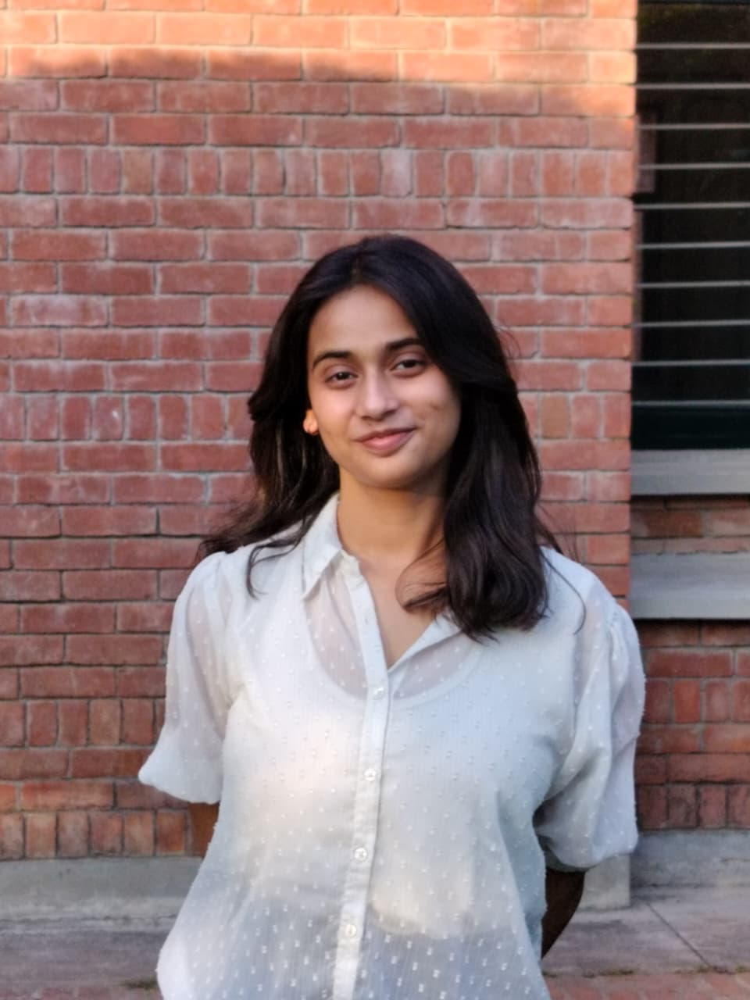

Computer Science Engineering student passionate about building scalable web applications, solving real-world problems, and continuously learning modern technologies.

I am a B.Tech Computer Science Engineering student with a strong interest in software development and problem solving. I enjoy transforming ideas into practical solutions through code and have worked on projects involving web development, facial recognition and cybersecurity concepts. My goal is to become a skilled Full Stack Developer and contribute to innovative technology-driven solutions.
Technologies Used: Python, TensorFlow, LangChain, LangGraph, OpenAI API, React, MongoDB
Developing an AI-powered cyber defence system that autonomously detects, analyzes, and responds to cybersecurity threats in real time. The platform leverages machine learning, agentic AI, and network monitoring to identify anomalies, interpret attack patterns, and automate incident response. A live dashboard provides continuous monitoring, alert management, and security insights to strengthen overall system protection.
View on GitHubTechnologies Used: Python, OpenCV, MongoDB, JavaScript
Developed a facial recognition-based system to help locate missing children efficiently. The platform compares uploaded images with a centralized database to identify potential matches and assist authorities in search operations. Leveraging AI, computer vision, and real-time data processing, the system improves identification accuracy, reduces response time, and enhances child safety through technology-driven solutions.
View on GitHubTechnologies Used: HTML, CSS, JavaScript, Git, GitHub
Developed a web-based platform that enables users to create, customize, and share various forms through an intuitive and responsive interface. The system supports dynamic form creation and efficient response collection, simplifying data gathering for different use cases while ensuring an accessible and user-friendly experience.
View on GitHubPranveer Singh Institute of Technology, Kanpur
Expected Graduation: 2027
CGPA/Percentage: 78.3% (Till 5th Semester)
Children Public Sr. Sec. School, Fatehpur
Percentage: 72.83%
Children Public Sr. Sec. School, Fatehpur
Percentage: 76.6%
Email: anushkaagrahari17@gmail.com
Phone: +91 7752980002
Location: India